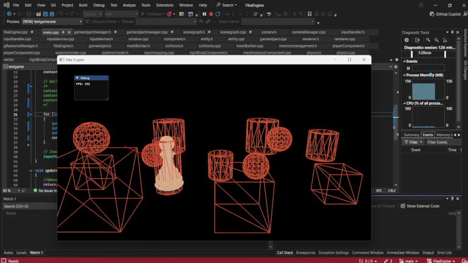
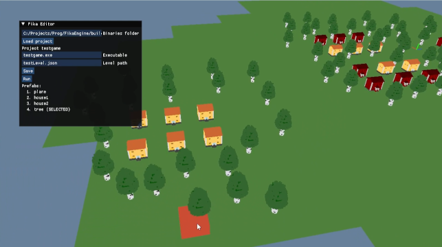
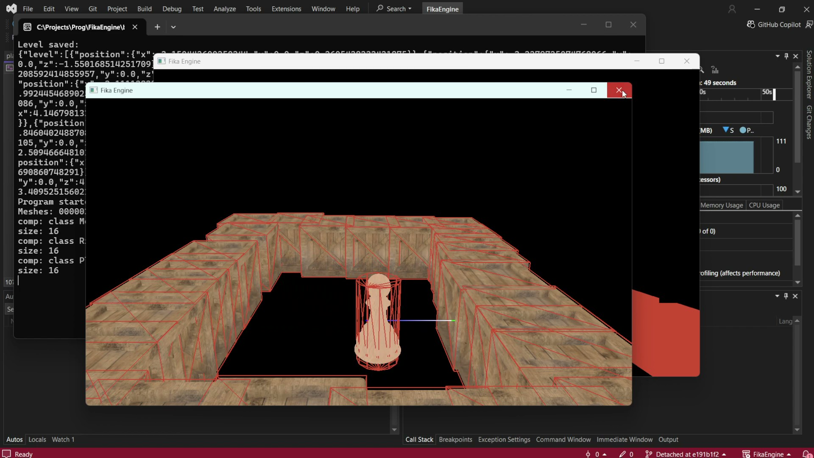

✖
Fika Engine



2026/4 - now
Fika Engine is a small 3D C++ experimental game engine which I'm using to test and implement various features used in game development. The goal is to create a minimal generic engine within scope of single person, or small team, which would be suitable for game jam creations. Alongside I share my progress and knowledge on Fika Engine YouTube channel.
The engine is currently a framework in early stage but it has already got several standard features that can be used for creating a simple games. Engine provides:
- Game loop and entity manager based on ECS architecture
- Allocators and basic tools for memory management
- Simple OpenGL rendering
- Collision detection for Spheres, AABB, Capsules and Lines
- Various graphics resources managenet
- Entities and components serialization
- Simple level editor
- Inputs handing
- Basic project setup tools